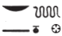

Central Door (92-102)
Esna 92
- Location: Facade, Central Door, left side, top
- Date: Vespasian
- Hieroglyphic Text
- Bibliography: None
Cartouches of Vespasian.
Esna 93
- Location: Central Door, Left Side,top
- Date: Most likely Vespasian (Sauneron)
-
Hieroglyphic Text
- Bibliography: None
Esna 94
- Location: Central Door, Left Side, bottom
- Date: Titus
-
Hieroglyphic Text
- Bibliography: None
nṯr nfr wṯt n ẖnmw
ỉr ȝḫ.w n ỉt=f
nb-tȝ.wy
(ȝwtwkrtwr Tỉtỉs gysrs)
mry ẖnmw-Rʿ nb tȝ-sn.t
The good god, begotten of Khnum,
who makes benefactions for his father,
Lord of the Two Lands,
(Autokrator Titus Caesar)
beloved of Khnum-Re Lord of Esna.231
Esna 95
- Location: Central Door, left side, base
- Date: Unknown, likely Vespasian
-
Hieroglyphic Text
- Bibliography: Sauneron 1962, p. 161.
NB: This hymn is an excerpt of a longer hymn to Khnum: Esna III, 276.
2nfr.wy ḥr=k
ỉw ʿ.wy=k ḥr nḥp
ḥr qdỉ swḥ.t nb rʿ-nb
3nfr.wy ḥr=k
ỉw=k (ḥr) sṯỉ kȝ.w
r ỉd.wt
r ỉr(.t) mw
ḥr sḫpr qs.w
4nfr.wy ḥr=k
ỉw=k (ḥr) qdỉ rmṯ
ms nṯr.w ʿw.t nb
mỉt.t
5nfr.wy ḥr=k
ỉw=k (ḥr) ṯnỉ nsw.t
ḥr nḥp=k
r smn tȝ
m wḏ.t.n=f
6nfr.wy ḥr=k
ỉw=k m-ḫnt ẖ.t
r swḏȝ qmȝ.n=k
ḥr pr=sn r tȝ
7nfr.wy ḥr=k
ỉw=k m bȝ šw
sn.t=k m mḥy.t
r-gs=k
8nfr.wy ḥr=k
ỉw=k m ỉṯ-kȝ
sḫn.tw ḥnʿ ww m zp
2 How beautiful is your face!
your arms are on the potter’s wheel
building every egg, daily.
3 How beautiful is your face!
you make bulls ejaculate
in cows,
to make semen
(and thereby) create bones.232
4 How beautiful is your face!
you build humans,
fashion gods and all livestock,
likewise.
5 How beautiful is your face!
you distinguish the king
upon your potter’s wheel,
to establish the earth
through that which he decreed.
6 How beautiful is your face!
you are within the womb,
to preserve what you created
when they come forth on earth.
7 How beautiful is your face!
you are the Ba of Shu (wind),
your sister is the north wind
beside you.
8 How beautiful is your face!
you are the flooding Nile
uniting together with the fields.
Esna 96
- Location: Central Door, Left Side, pillar
- Date: Titus
-
Hieroglyphic Text
- Bibliography: None
1wnn nsw.t-bỉtỉ
(ȝwtkrtwr tỉtỉs kysrs)
ḥr ʿq m ḥtp r Iwny.t […]
[…]
[nw]r=sn n ỉr.n=f
sw m twr zȝ twr
ḥr ỉn(.t) pr m Nwn
wḥm-ʿnḫ ỉỉ m ṯpḥ.t
r bʿḥ ȝḫ.t=k
r sḏfȝ wḏḥw=k
m ỉḫt nb nfr
ḥr 2mḥ šnʿ.t=sn
m kȝ.w ḏfȝw(?)
ḫws.n=f ḥw.t-ẖnmw
m ḥb nḥp
ỉr.n=f ȝḫ.w
[n ḫnty?]-sḫ.t
ỉw=sn ḥr [rdỉ.t?] Mȝʿ.t n šw zȝ-Rʿ
ḥr ḥnk=s m bȝḥ=f m ẖr.t-ḥrw
sḥtp=f nṯr šps
m mr=f
wnn tȝ-sn.t mn.tw rʿ-nb
mỉ pt ḥr sḫn.w=s
1 As the King of Upper and Lower Egypt,
(Autokrator Titus Caesar)
is entering in peace to Esna […]
[…]
they [trem]ble233 from what he has done,
he is the Purifier, son of the Purifier,234
bringing that which comes from Nun,
the inundation which comes from the caverns,
to inundate your field,
to provision your altar,
with all good things,
(and) 2 filling their storehouses
with food and provisions(?).235
As he built the Temple of Khnum
for the festival of the Po[tter] (Khnum),236
so he made benefactions
[for the one Foremost] of the Field (Khnum).237
They are [giving] Maat to Shu,238 the son of Re,
offering it before him daily:
thus he pacifies the august god
with what he loves.
So Esna239 endures, night and day,
like the sky upon its pillars.
Esna 97
- Location: Central Door, left side
- Date:Vespasian
-
Hieroglyphic Text
- Bibliography: Grenier 1987; Klotz 2014b, p. 35.
NB: The second half of this text is a shorter, partially damaged version of Esna 47 A and Esna 47 B. See those sections for references and full translation.
1[…]
nb nṯr.w
wʿ-wʿ.w
ʿnḫ tȝ m […]
2[…] dỉ(.w) ʿnḫ ḏ.t
3[…]
ỉty
ḥqȝ zȝ ḥqȝ
wḏ=k pw tkn r ḥr.t
sbty n bỉȝ [ḥȝ] Bȝq.t
[mrỉ] sw ḥp-[ʿnḫ]
[sr]=f [n=f] [h]ȝ.w ʿšȝ.w nfr.w
nsw.t-bỉty
nb tȝ.wy
([…] kysrs)
zȝ-Rʿ nb-ḫʿ.w
(wspsyns nty-ḫwỉ)
ʿnḫ(.w) ḏ.t mỉ Rʿ
1 […]
lord of the gods,
the truly unique one,240
the earth lives from […]
2 […] given life, eternally.
3 […]
The sovereign,
Ruler, son of the Ruler,
it is your decree which reaches up to heaven,
a wall of iron [around] all Egypt.
[The living] Apis [loves] him,241
he [announces for him] numerous, great [ye]ars.
King of Upper and Lower Egypt,
Lord of the Two Lands,
([Autokrator] Caesar)
Son of Re, Lord of Appearances,
(Vespasian Augustus)
living eternally like Re.
Esna 98
- Location: Facade, Central Door, right side, top
- Date: Vespasian
- Hieroglyphic Text
- Bibliography: None
Cartouches of Vespasian.
Esna 99
- Location: Facade, Central Door, right side
- Date: Unknown, probably Vespasian
- Hieroglyphic Text
- Bibliography: None
Inscriptions and reliefs now lost.
Esna 100
- Location: Facade, Central Door, right side
- Date: Unknown, probably Vespasian
-
Hieroglyphic Text
- Bibliography: None
([…nty]-ḫwỉ)
mry N.t wr.t
mw.t-nṯr
nb.t tȝ-sn.t
([…] Augustus)
beloved of great Neith,
Mother of God,
Lady of Esna ()
Esna 101
- Location: Central Door, right side, base
- Date: Unknown, likely Vespasian
-
Hieroglyphic Text
- Bibliography: Sauneron 1962, pp. 161-162.
NB: This hymn is an excerpt of a longer hymn to Khnum: Esna III, 276, just like Esna 95. In this case, Khnum’s epithets are attributed to Neith, and the second person feminine singular pronoun is used.
3 […]
[tȝ] r-ḏr=f sḥḏ.w
m nfrw=t
[nfr.wy ḥr=ṯ *
*ỉw=t] sṯy ḥʿpỉ m ṯpḥ.t
tȝ nb bʿḥ(.w) m nfrw=t
bȝq Bȝq.t m ȝḫ.w=t
[nfr.wy ḥr=ṯ]
ỉw=t m nb.t sḫ.t
ḥȝy m ṯȝw
r srwḏ sm.w
r sḫpr ẖr.w
n ḥr nb
[nfr.wy] ḥr=ṯ
ỉw=t m tr n ȝḫ.t
srwḏ.n=t rwḏ.w
ḏdȝ.n=t npry
sḫpr.n=t ḫ.t-n-ʿnḫ
n ʿnḫ.w
nfr.wy ḥr=ṯ
ỉw=t m tr n pr.t
ww wbs.w m wȝḏwȝḏ
rr.n=t pr.t nb ỉm=s
nfr.wy ḥr=ṯ
ỉw=t m tr n šmw
mḥ.n=t ʿḥ
ʿpr.n=t šnw.t
ỉr.n=t ḥtp.w-nṯr
n nṯr.w nb.w
3 […]
the whole [earth] is illumined
from your beauty.
4 [How beautiful is your face!
You] spit out Hapi from the cavern
every land is flooded with your beauty,
Egypt is radiant with your luminescence.
5 [How beautiful is your face!]
You are Lady of the Field,
who blows as the wind
to make plants grow,
to create food
for everybody.
6 [How beautiful] is your face!
You are the season of Akhet,
just as you made plants grow,
you fattened the grain,
and created the tree-of-life
for the living.
7 How beautiful is your face!
You are the season of Peret,
the field blossoms with verdure,
you nurtured all that grows from it.
8 How beautiful is your face!
You are the season of Shomu,
as you filled the palace,
so you equipped the granary,
and you made offerings
for all the gods.
Esna 102
- Location: Central door, right (north) side
- Date: Vespasian
-
Hieroglyphic Text
- Bibliography: el-Sayed 1982, p. 656, Doc. 1072 (partial).
1wnn zȝ-Rʿ
(wspsynys nty-ḫwỉ)
ḥr pr(.t) m qd
r tȝ-sn.t m ḥʿʿ
r wȝḥ ḥtp.w-nṯr
n ḥnw.t-nṯr.w
ḥr pẖr ȝḫ.t n mw.t-nṯr
m ʿnty.w bhd
ḥr šps pr-ḥḏ=s m ỉḫt nb [nfr]
ḥr šms ʿntyw m-bȝḥ=s
m ẖr.t-hrw
ḥr dỉ.(t) 2ỉȝw n mw.t=f wsr.t
ḥr šzp sšš.wy=s
ḥr rwỉ qnd=s
ḥr swȝš kȝ[=s]
ḥr sḥtp ḥm=s
m ȝt dndn=s
ḥr sʿr mȝʿ.t […]
ḥʿʿ ỉb=s n mȝȝ s.t
mỉ wr kȝ=s r nṯr.w
wnn=s ḥtp.tw m tȝ-sn.t
zȝ.t mn.tw ẖr sštȝ=s
mỉ tȝ ḥr bȝkȝ.wt=f
1 While the Son of Re,
(Vespasian Augustus)
is coming out in ceremony
to Esna242 in jubilation,
to leave offerings
for the mistress of the gods,
surrounding the Akhet of the Mother of God
with aromatic myrrh,
stocking her treasury with all good things,243
offering myrrh before her,244
every day,
giving 2 praise to his mother, the Mighty,
shaking her sistra,
repelling her anger,245
praising her Ka,
pacifying her majesty
at the moment of her fury,
elevating Maat […]
her heart rejoices to see it,
since her Ka is greatest of the gods,
She is at peace within Esna,
while Sais endures with her mysterious form,
just like the earth upon its foundations.